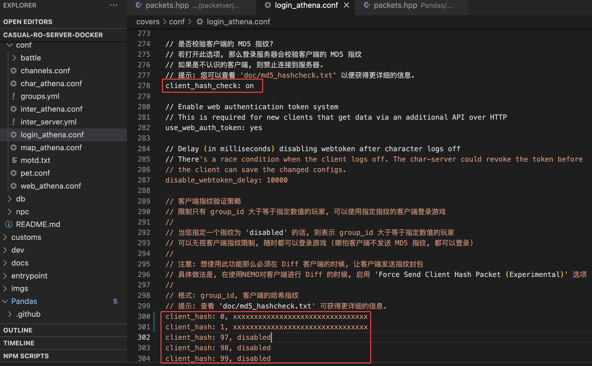

0. 前言
最近打算用 rAthena 做强化学习训练，但是苦于封装游戏交互逻辑比较费事费力。
于是我就想找到以前的 RO Bot，因为它们肯定内置了交互逻辑。但是过去差不多 20 年了，以前的 Bot 99% 都废了，从哪里能翻出来也是一个问题。
一个偶然的机会，发现 Openkore 社区还活跃着，而且 OpenKore 和传统的 Bot 还不太一样，它是纯命令行交互、没有 UI 界面，这就为我以后为了 “训练强化学习模型而封装交互逻辑接口” 提供了可能性。

1. 环境安装
可参考官方文档： How to run OpenKore
2. 关键配置
在 Openkore 的源码中，必须要修改的只有两个文件：
tables/servers.txt: 服务器参数配置（必须）control/config.txt: 连接到服务器的账号配置（登录时自动填写）control/*.txt: Bot 行为策略配置（可选）
3. 服务器参数配置（必须）
在 Openkore 的 tables/servers.txt 中主要配置了所有 RO 服务器连接信息。
查看详情参数配置说明
每一个服务器配置的完整配置模板如下：
[<server name>]
ip
port
version
master_version
serverType
serverEncoding
charBlockSize
addTableFolders
# following options are optional
private
recvpackets
chatLangCode
storageEncryptKey
field_
clientHash
captcha
gameGuard
secureLogin
secureLogin_type
secureLogin_requestCode
secureLogin_account
preLoginCode
paddedPackets
paddedPackets_attackID
paddedPackets_skillUseID
masterLogin_packet
OTP_ip
OTP_port
dead
dead_message
title
pinCode
charDeleteDateType
blockingPlayerCancel
rankingSystemType
itemListType
ignoreAntiCheatWarning 例如对于 PACKETVER = 20211103 的 rAthena 服务端，其服务器连接配置就是:
[z_YourRO - xxxxxx]
ip ${Your_Server_Public_IP}
port 6900
master_version 1
version 28
serverType kRO_RagexeRE_2021_11_03
serverEncoding GBK
gameGuard 0
storageEncryptKey 0x050B6F79, 0x0202C179, 0x00E20120, 0x04FA43E3, 0x0179B6C8, 0x05973DF2, 0x007D8D6B, 0x08CB9ED9
addTableFolders kRO/Ragexe_2021_11_03;iRO
charBlockSize 175
pinCode 0
charDeleteDateType 1
rankingSystemType 1
private 1
# sendCryptKeys ${PACKET_OBFUSCATION_KEY1},{PACKET_OBFUSCATION_KEY3},{PACKET_OBFUSCATION_KEY2}3.1. 必填选项
3.1.1 server name
服务配置的名称，名字可任意设定，这个名字在连接时、会出现在服务器选单中。由于选单是按字母序排序的，故其首字母可以控制这份服务器配置在选单中出现的位置。
尽量避免更改已存在的服务名称，以免破坏已存在的配置。建议可以新增一条服务配置记录。
3.1.2. ip
需要登录的 RO 服务器 IP，又分几种情况：
- 本地提供服务（docker 服务暴露到宿主机也算）: 固定值 host.docker.internal
- docker 内提供服务（没有暴露到宿主机）: 该服务需要使用 docker-compose.yml 的网段，并指定任意一个 IP
- 局域网提供服务: 配置为局域网的 IP
- 云主机提供服务: 配置为云主机的公网 IP
- 通过反向代理提供服务: 配置为代理的公网 IP
127.0.0.1是 openkore-docker 容器本地的 IP，除非用这个仓库作为基础镜像搭建 RO 服务端，不然不论哪种情况都不应配置为127.0.0.1
3.1.3. port
需要登录的 RO 服务器端口，默认是 6900，非必要不需要改。
3.1.4. version 和 master_version
根据官方的介绍，这两个值需要通过 WPE 或 Wireshark 抓取封包获得，以 WPE 为例：
运行 RO 客户端 ragnarok.exe，但是停在输入帐密的界面，不要登录。然后运行 WPE，点击 Target Programs 按钮：
找到 ragnarok.exe 并双击选中为抓包目标（部分补丁可能改过进程名，如: xxxRO.exe、xxxx.dll、xxxxx.bin 等，按实际选择即可）

点击 WPE 的抓包按钮，然后切换到 RO 的登录界面登录，在输入框随便输入帐密（可以不正确）、点击登录
再切换到 WPE ，点击停止抓包按钮：

此时可以看到刚才登录时抓到的包：

如上图这个发送出去的封包（可以看到 RO 登录帐密是明文传输的，没有做加密处理），其中：
- 对应
version，需要按照小端序（little-endian）将这 4 个十六进制数重新排列。这里为14 00 00 00，小端序就是从有到左倒过来00 00 00 14，转成十进制就是20 - 对应
ip，RO 登录服务 IP，如果前面配 IP 不知道取什么值，可以在这里获取 - 对应
port，RO 登录服务端口，如果前面配端口知道取什么值，可以在这里获取 - 对应
master_version，固定是最后 1 个十六进制数，这里为10，转成十进制就是2
事实上只有官服才会校验版本，实测在 rAthena 系列中配置为任意值都会不影响 openkore 登录。
3.1.5. serverType
服务器类型。每个官服都有自己的服务器类型，rAthena 必须根据可执行文件的编译日期使用 kRO 服务器类型，而且还需要 openkore 支持。
根据官方说明，rAthena 私服的固定格式为：
kRO_RagexeRE_<year>_<month>_<date><letter>官方提供了一张枚举表，建议通过 PEViewer 等工具查看 ragnarok.exe 文件头中的编译日期、然后根据日期查表获得对应的的 serverType。
但是枚举表更新有延迟，通过 github issue 得知，目前 openkore 支持 kRO 最新的版本是 2021-11-03，对应网络文件是 ./openkore/src/Network/Receive/kRO/RagexeRE_2021_11_03.pm、包解码文件是 openkore/tables/kRO/Ragexe_2021_11_03/recvpackets.txt。
对应 rAthena 的 PACKETVER 也是 20211103:

RO 服务器发送给客户端的网络数据是一个字节流，openkore 必须能够识别字节流中的消息才能对其进行处理。但是每条消息的大小可能因服务器而异，recvpackets.txt 则包含了每条消息的大小信息，以便 openkore 可以正确地将字节流拆分成消息。recvpackets.txt 的生成方式详见官方说明。
如果 serverType 配置不当，可能会出现以下异常：
- Packet Tokenizer: Unknown switch: xxxx
- 几秒钟后断开连接
- openkore 无法识别 NPC、玩家和怪物（显示为未知）
此时需要利用 Packet Extractor 或 JCV’s RO Tools 生成对应的 recvpackets 后、再配置其 serverType。
实测 serverType = kRO_RagexeRE_2021_11_03 时，依然能兼容 PACKETVER = 20211117 版本的包解码。
3.1.6. serverEncoding
服务端使用的编码，编码列表可以在这里选择。如果发现连接后乱码，需要变更编码配置。
一般中文搭建的 rAthena 服务端都是 GBK 编码。
3.1.7. charBlockSize
在角色选择界面上，用于描述每个字符的数据块（received_characters）的长度（以字节为单位）。
这个值每个版本迭代都可能会变化，因为它的来源就是 rAthena 源码中 mmo_char_tobuf 所生成的结构体的块大小，但是这个大小在不同版本中都是动态不固定的。
一般的服务器运营者很难获取到这个值，即使是运维人员、甚至是开发人员也不好获取。
官方有在维护一张各个版本的枚举值表，但是因为有人在论坛里面建议 openkore 自动获得这个值，所以目前这个值已经处于半弃用状态了。
20211117 版本的 rAthena 可以配置为最后一个枚举值 175。
3.1.8. addTableFolders
当 openkore 的启动命令行没有声明 --tables 参数时，使用这个选项的值做默认配置。
对于 rAthena 搭建的服务器，一般配置为 addTableFolders kRO/Ragexe_2021_11_03;iRO
其中 ; 是指添加了两个目录，openkore 会按照给出的顺序加载目标文件夹，如果有重复的文件名，只有首先加载的文件生效。
在这个例子中，kRO/Ragexe_2021_11_03 和 iRO 两个文件夹中都有 recvpackets.txt，那么 openkore 会优先使用 kRO 中的文件。
为了使这些设置生效，这些文件夹必须存在于 openkore 的
tables目录下。但是由于 docker 没有暴露这些文件夹到主机，所以 volumes 目录下看不到，可以通过bin/terminal.sh|ps1进入容器找到这些目录。
3.2. 可选选项
3.2.1 sendCryptKeys
官方没有针对这个配置做说明，是一个隐藏选项。
当服务端采用封包加密通信时，服务端或者客户端都会依次设置 3 个密钥，例如: 0a19cadf, 393a136d, 270c507c：

此时 openkore 需要设置 sendCryptKeys 才能连接到服务端，而密钥顺序需要配置为 1, 3, 2，例如这个例子：
sendCryptKeys 0a19cadf, 270c507c, 393a136d3.2.2. private
如果 openkore 连接到地图服务器报错，则可以启用这个选项。
rAthena 搭建的私服一般设置为 1。
3.2.3. recvpackets
指定 recvpackets.txt 的文件名，非必要不修改，使用默认就好。
3.2.4. chatLangCode
启用聊天消息中的语言代码支持（一个管道和两个十六进制数字），一般不设置。
例如有 1 条聊天消息为： Hello, xxx|01， 最后的 |01 就是语言代码。
但是 openkore 并没有给出语言代码的枚举表，所以实际上这个选项没有意义。
3.2.5. storageEncryptKey
指定服务器的存储加密密钥，用于加解密数据包。
这个值官方没有提及怎么获取，估计是逆向得到的。
在将来可能会发生变化，但是目前固定值为 0x050B6F79, 0x0202C179, 0x00E20120, 0x04FA43E3, 0x0179B6C8, 0x05973DF2, 0x007D8D6B, 0x08CB9ED9。
3.2.6. field_<location>
这个选项用于设置地图别名，例如： field_morocc morocc-old
如果你的服务器使用过时或修改过的地图数据，它将非常有用。
3.2.7. clientHash
在 rAthena 的服务端 login_athena.conf 配置中，可以通过启用 client_hash_check 验证客户端 exe 文件的 MD5 指纹避免恶意玩家篡改登陆器登录：

此时 openkore 可以通过设置 clientHash 伪造指纹，绕过这个识别机制。
但是对于同时使用 rAthena 搭建、又通过 openkore 的做机器人的服主，建议在 rAthena 开启 client_hash_check 的同时，设置 client_hash 的 group_id 策略，如上图例子：
- 对于
group_id = 0, 1的正常玩家做 clientHash 指纹校验 - 对于
group_id = 97的机器人玩家不做校验 - 对于
group_id = 98, 99的 GM 不做校验
这样 openkore 就不需要设置 clientHash，而且还能区分机器人和正常玩家、进行统一管理。
3.2.8. captcha
验证码的应用场景可以参考官方例子。
当开启这个选项时，挂机过程中一旦 openkore 被反外挂程序识别出来并要求填写验证码时：
- 验证码的图片会自动下载到日志目录
logs - 人工查阅验证码图片
- 在 openkore 的控制台手动输入验证码
3.2.9. gameGuard
服务器是否启用了反外挂。
此选项在配置 Poseidon 代理时才有用，一般情况下，rAthena 搭建的服务器、其客户端在 DIFF 的时候都会去掉反外挂，因此固定配置 gameGuard 0 即可。
3.2.10. secureLogin
关于 secureLogin** 官方已有详细解释，这四个选项一般只有在连接官服的时候才有用，rAthena 搭建的服务器用不到。
就效果来说，这四个选项是为了让 OpenKore 能够以加密的方式进行保护账户信息的登录过程，这里大概说明一下：
- secureLogin: 这个选项定义了登录时所使用的数据包类型。具体值和对应的数据包包含：
- 0：不使用安全登录模式，登录时使用
0064标识的 master_login 登录行为 - 1：登录时使用
01DD标识的 master_login 登录行为 - 3：登录时使用
01FA标识的 master_login 登录行为
- 0：不使用安全登录模式，登录时使用
在 RO 中，每当有一项操作需要在服务器和客户端之间进行交互（如登录游戏，移动角色等），都会有一个特定的数据包被发送，这些标识符决定了数据包的功能和它们的格式结构。因此这里不管是 01DD 还是 01FA，都是 RO 服务端和客户端之间加密通信的标识符，区别只是两者的预设值不同、决定了后续发送数据包的类型和内容也不同。
- secureLogin_type: 当
secureLogin = 1 or 3时，选择发送数据包的内容：- 0：不使用标准类型的数据包
- 1：标准数据包
04 02 7B 8A A8 90 2F D8 E8 30 F8 A5 25 7A 0D 3B CE 52 - 2：标准数据包
04 02 27 6A 2C CE AF 88 01 87 CB B1 FC D5 90 C4 ED D2 - 3：标准数据包
04 02 42 00 B0 CA 10 49 3D 89 49 42 82 57 B1 68 5B 85 - 4：标准数据包
04 02 22 37 D7 FC 8E 9B 05 79 60 AE 02 33 6D 0D 82 C6 - 5：标准数据包
04 02 C7 0A 94 C2 7A CC 38 9A 47 F5 54 39 7C A4 D0 39
- secureLogin_requestCode: 当需要自定义数据包内容时，则令
secureLogin_type = 0，然后在 secureLogin_requestCode 指定任何值即可（必须是以空格分隔的十六进制代码序列） - secureLogin_account: 当且仅当
secureLogin = 3时才有用，但是官方没有提有什么用。
3.2.11. preLoginCode
如果你的服务在 master_login 登录前发送了一个数据包，此选项应该设置为 1。 但是目前没有任何地方用到这个选项。
master_login 就是指客户端输入帐密登录的那个界面的登录行为
3.2.12. masterLogin_packet
覆盖 master_login 数据包（但不改变其结构）。
如果与 0064 标识不同，则需要使用 XKore 模式 2（hook）的部署架构。
3.2.13. paddedPackets
官方没有关于 paddedPackets、paddedPackets_attackID 和 paddedPackets_skillUseID 的选项说明。
3.2.14. OTP_ip 和 OTP_port
含有一次性登录密码的登录服务 IP 和 端口。
3.2.15. dead 和 dead_message
如果 dead = 1，表示该服务器已经停止服务，使用 openkore 连接时不会出现在服务器清单中。
如果存在 config.txt 引用了这种服务器，则会抛出 dead_message 定义的异常信息。
3.2.16. title
单纯改变 [<server name>] 在列表中显示的名称，但是 config.txt 记录的名称依然是 [<server name>] 设定的名称，列表排序还是按照 [<server name>] 的字典序。
是当想修改服务器名称又不想令已有配置异常时，这个选项很有用。
3.2.17. pinCode
当 RO 服务器需要使用 PIN 码登录时，此选项需要设置为 1。
3.2.18. charDeleteDateType
当 RO 服务器需要使用当前日期和时间来删除人物角色时，此选项需要设置为 1。
3.2.19. blockingPlayerCancel
当 RO 服务器需要客户端发送 blocking_player_cancel （0447 标识的数据包）时，此选项需要设置为 1。
当且仅当 XKore 部署架构为模式 1 时无效
3.2.20. rankingSystemType
当 RO 服务器使用 rank_general（通用排名），而非 rank_killer（刺客排名）、rank_taekwon（跆拳道排名）、rank_alchemist（炼金术士排名）、rank_blacksmith（铁匠排名）时，此选项需要设置为 1。
3.2.21. itemListType
如果 RO 服务器使用 0B08 ~ 0B0B 的 item_list 数据包、而非使用了常规的 item 数据包，此选项需要设置为 1。
一个判断方法是，如果使用了非常规的 item 数据包，会报错 Unknown switch: xxxx（xxxx 为 0B08 ~ 0B0B 之间的任何多个值），而且无法使用背包和仓库道具，详见这个 issue。
3.2.22. itemListUseOldType
在 item_list 中支持历史版本的道具类型，可见相关 issue。
3.2.23. ignoreAntiCheatWarning
如果启用此选项，则禁用所有反作弊警告。
当前仅适用于 EAC(Easy Anti-Cheat) 反作弊系统。
4. 连接到服务器
在 tables/servers.txt 中配置好目标 RO 服务器的连接信息后，只需要执行 perl /app/openkore/openkore.pl 即可连接到 RO 服务器。
连接过程中会通过交互的方式填写帐号配置:
- 选择上一步中配置好的服务器：
- 输入已有的游戏帐号和密码：
- 选择区域服务器：
- 选择角色：
交互过程中会不断更新 control/config.txt 这个文件，完成后即成功登录，此时会根据 control/*.txt 预设的行为策略进行挂机。
5. Bot 行为策略配置（可选）
在 Openkore 的 control 目录下的配置文件都是在 Bot 挂机时的行为策略控制配置：
| 分类 | 配置文件 | 官方文档 | 说明 |
|---|---|---|---|
| 核心配置 | config.txt | wiki | 主配置文件，是 Bot 登录 RO 服务器的主配置文件， 连接信息主要在第一次登录时通过交互方式配置。 |
| sys.txt | wiki | 系统配置文件，是系统参数的配置文件， 例如语言、插件、总线等等的配置。 |
|
| 一般行为配置 | items_control.txt | wiki | 道具使用策略 |
| mon_control.txt | wiki | 对抗魔物策略 | |
| priority.txt | wiki | 当被复数魔物攻击时、击杀它们的优先级 | |
| pickupitems.txt | wiki | 自动拾取策略 | |
| routeweights.txt | wiki | 自动寻路所经过的地图的权重（倾向走或避开哪些地图） | |
| timeouts.txt | wiki | 超时配置文件（控制行为间隔，使得 bot 看起来更像真人） | |
| avoid.txt | wiki | 自动避开特定玩家 | |
| 特殊行为配置 | arrowcraft.txt | wiki | 自动制作箭（仅弓箭手职业有用） |
| shop.txt | wiki | 自动挂店（需要拥有 露天商店 技能） | |
| buyer_shop.txt | wiki | 自动挂店（采购商店，需要消耗采购商店执照） | |
| chat_resp.txt | wiki | 自动聊天（此处可以接入 ChatGPT） | |
| overallAuth.txt | wiki | 授权 bot 是否允许在 openKore 的控制台里面聊天 | |
| responses.txt | wiki | 自动对聊天框的命令做出响应（回复消息、使用技能等） | |
| 其他配置 | consolecolors.txt | wiki | 控制台打印消息的颜色 |
| poseidon.txt | wiki | 海神服务器（在 RO 服务端和客户端之间搭建的一个代理服务器，用于截获游戏数据） |
这里的配置修改后，需要重新连接服务器才会生效
6. 多帐号连接到服务器
默认情况下，执行 perl /app/openkore/openkore.pl 只能使用默认配置连接到 RO 服务器。
执行 perl /app/openkore/openkore.pl -h 可以查看更多参数指引：
Usage: openkore.pl [options...]
General path options:
--control=PATHS Specify folders in which to look for control files.
--tables=PATHS Specify folders in which to look for table files.
--plugins=PATH Specify folders in which to look for plugins.
For the above options, you can specify multiple paths, delimited by ':'.
--fields=PATH Specify the folder in which to look for field files.
--logs=PATH Save log files in the specified folder.
Control files lookup options:
--config=FILENAME Which config.txt to use.
--mon_control=FILENAME Which mon_control.txt to use.
--items_control=FILENAME Which items_control.txt to use.
--shop=FILENAME Which shop.txt to use.
--chat-log=FILENAME Which chat log file to use.
--console-log=FILENAME Which console log file to use.
--storage-log=FILENAME Which storage log file to use.
--sys=FILENAME Which sys.txt to use.
Other options:
--interface=NAME Which interface to use at startup.
--lockdown Disable potentially insecure features.
--ai Starting AI mode (on, manual, off) (default: on)
--command=COMMAND Initial command to place on the AI queue
--help Displays this help message.
--version Displays the program version.
Developer options:
--no-connect Do not connect to any servers.
Options for the 'profiles' plugin:
--profile=PROFILE profile to use (default: prompt)注意到其中两个参数可用于连接更多帐号：
--control=${control 目录位置}: 适用于多帐号使用不同的挂机策略--config=${config 文件位置}: 适用于多帐号使用相同的挂机策略
根据需求二选一即可。